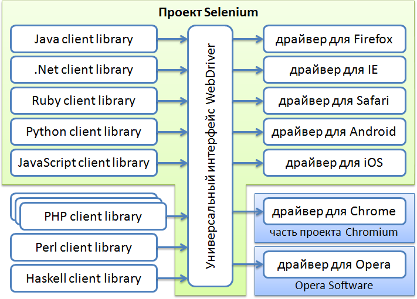
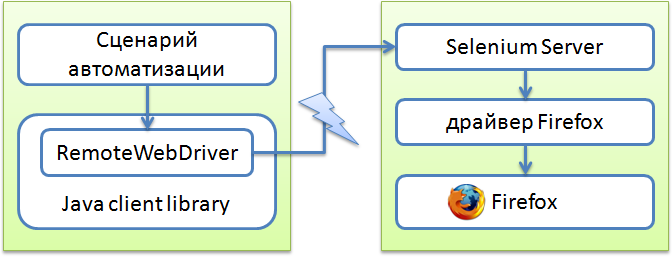

Что такое Selenium?
Тестирование IT-систем
Время от времени мне приходится распутывать терминологические хитросплетения, связанные с употреблением словосочетаний, в которых встречается слово Selenium – Selenium 2.0, Selenium IDE, Selenium RC, Selenium WebDriver, Selenium Server, Selenium Grid.
Путаница возникает во многом из-за того, что нигде нет чёткого описания всех этих терминов на одной страничке, и я постараюсь восполнить этот информационный пробел.
Selenium
Selenium – это проект, в рамках которого разрабатывается серия программных продуктов с открытым исходным кодом (open source):
Называть просто словом Selenium любой из этих пяти продуктов, вообще говоря, неправильно, хотя так часто делают, если из контекста понятно, о каком именно из продуктов идёт речь, или если речь идёт о нескольких продуктах одновременно, или обо всех сразу.
Selenium WebDriver
Selenium WebDriver – это программная библиотека для управления браузерами. Часто употребляется также более короткое название WebDriver.
Иногда говорят, что это «драйвер браузера», но на самом деле это целое семейство драйверов для различных браузеров, а также набор клиентских библиотек на разных языках, позволяющих работать с этими драйверами.
Это основной продукт, разрабатываемый в рамках проекта Selenium.
Selenium WebDriver называется также Selenium 2.0, причина этого будет объяснена ниже.
Как уже было сказано, WebDriver представляет собой семейство драйверов для различных браузеров плюс набор клиентских библиотек для этих драйверов на разных языках программирования:

В рамках проекта Selenium разрабатываются драйверы для браузеров Firefox, Internet Explorer и Safari, а также драйверы для мобильных браузеров Android и iOS. Драйвер для браузера Google Chrome разрабатывается в рамках проекта Chromium, а драйвер для браузера Opera (включая мобильные версии) разрабатывается компанией Opera Software. Поэтому они формально не являются частью проекта Selenium, распространяются и поддерживаются независимо. Но логически, конечно, можно считать их частью семейства продуктов Selenium.
Аналогичная ситуация и с клиентскими библиотеками – в рамках проекта Selenium разрабатываются библиотеки для языков Java, .Net (C#), Python, Ruby, JavaScript. Все остальные реализации не имеют отношения к проекту Selenium, хотя, возможно, в будущем, какие-то из них могут влиться в этот проект.
Selenium RC
Selenium RC – это предыдущая версия библиотеки для управления браузерами. Аббревиатура RC в названии этого продукта расшифровывается как Remote Control, то есть это средство для «удалённого» управления браузером.
Эта версия с функциональной точки зрения значительно уступает WebDriver. Сейчас она находится в законсервированном состоянии, не развивается и даже известные баги не исправляются. А всем, кто сталкивается с ограничениями Selenium RC, предлагается переходить на использование WebDriver.
Иногда Selenium RC называется также Selenium 1.0, тогда как WebDriver называется Selenium 2.0. Хотя на самом деле дистрибутив версии 2.0 включает в себя одновременно обе реализации – и Selenium RC, и WebDriver. А вот когда выйдет версия 3.0 – в ней останется только WebDriver.
С технической точки зрения WebDriver не является результатом эволюционного развития Selenium RC, они построены на совершенно разных принципах и у них практически нет общего кода. Объединяет их лишь тот факт, что обе реализации были сделаны в рамках проекта Selenium. Ну, или если быть совсем точным, WebDriver сначала был самостоятельным проектом, но в 2008 году произошло слияние и сейчас WebDriver представляет собой основной вектор развития проекта Selenium.
Selenium Server
Selenium Server – это сервер, который позволяет управлять браузером с удалённой машины, по сети. Сначала на той машине, где должен работать браузер, устанавливается и запускается сервер. Затем на другой машине (технически можно и на той же самой, конечно) запускается программа, которая, используя специальный драйвер RemoteWebDriver, соединяется с сервером и отправляет ему команды. Он в свою очередь запускает браузер и выполняет в нём эти команды, используя драйвер, соответствующий этому браузеру:

Selenium Server поддерживает одновременно два набора команд – для новой версии (WebDriver) и для старой версии (Selenium RC).
Selenium Grid
Selenium Grid – это кластер, состоящий из нескольких Selenium-серверов. Он предназначен для организации распределённой сети, позволяющей параллельно запускать много браузеров на большом количестве машин.
Selenium Grid имеет топологию «звезда», то есть в его составе имеется выделенный сервер, который носит название «хаб» или «коммутатор», а остальные сервера называются «ноды» или «узлы». Сеть может быть гетерогенной, то есть коммутатор и узлы могут работать под управлением разных операционных систем, на них могут быть установлены разные браузеры. Одна из задач Selenium Grid заключается в том, чтобы «подбирать» подходящий узел, когда во время старта браузера указываются требования к нему – тип браузера, версия, операционная система, архитектура процессора и ряд других атрибутов.
Ранее Selenium Grid был самостоятельным продуктом. Сейчас физически продукт один – Selenium Server, но у него есть несколько режимов запуска: он может работать как самостоятельный сервер, как коммутатор кластера, либо как узел кластера, это определяется параметрами запуска.
Selenium IDE
Selenium IDE – плагин к браузеру Firefox, который может записывать действия пользователя, воспроизводить их, а также генерировать код для WebDriver или Selenium RC, в котором выполняются те же самые действия. В общем, это «Selenium-рекордер».
Тестировщики, которые не умеют (или не хотят) программировать, используют Selenium IDE как самостоятельный продукт, без преобразования записанных сценариев в программный код. Это, конечно, не позволяет разрабатывать достаточно сложные тестовые наборы, но некоторым хватает и простых линейных сценариев.
Вот, кажется, и всё.
Если я забыл рассказать про какой-то термин – напишите в комментариях, и я постараюсь добавить его в этот мини-словарик.